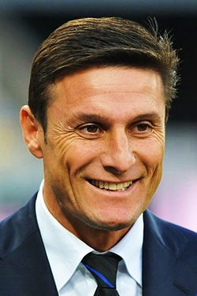

Javier Adelmar Zanetti (Dock Sud, Buenos Aires, 10 de agosto de 1973) es un exfutbolista argentino. Jugaba como lateral derecho o defensa central y desempeñó casi toda su carrera en el Inter de Milán de la Serie A de Italia. Es el tercer jugador con más partidos en la historia de la selección argentina (superado primeramente por Javier Mascherano y luego por Lionel Messi) y el argentino con más partidos profesionales jugados. Actualmente es, desde el 30 de junio del 2014, vicepresidente del Inter de Milán de La Serie A, equipo en donde es considerado uno de los máximos ídolos de la historia del club. Zanetti jugó como interista desde 1995 hasta su retirada, tomando el brazalete de capitán el 29 de agosto de 1999. Conocido por su versatilidad, que es experto tanto en la izquierda y la derecha, después de haber jugado en ambos flancos como defensa central y como extremo. Encaja en varias posiciones del mediocampo con facilidad, sobre todo como un volante defensivo. Conocido como "Pupi" en Argentina, Zanetti nació en Buenos Aires, tomando el apodo de "El Tractor" poco después de su traslado a Italia, donde su fuerza, elasticidad, resistencia y su capacidad para unirse al ataque le valió reverencia. Hacia el final de su carrera, jugó principalmente en el medio campo derecho. Puso fin a una sequía de goles de 4 años, cuando anotó el 5 de noviembre de 2006. En la selección Argentina se desplegó como lateral derecho, y es capaz de cambiar entre defensa y ataque con facilidad. Zanetti ganó cinco títulos de Serie A con el Inter de Milán (todos de forma consecutiva entre 2006 y 2010), después de haber ganado el apodo de «Il Capitano» (El Capitán) entre los aficionados y la prensa desde que asumió el brazalete de capitán en el Inter de Milán. A partir de la temporada 2011-12, fue el primer jugador no italiano capitán de un equipo de Serie A. Tiene el récord de apariciones de un jugador no nacido en Italia en un equipo italiano, y sus 834 partidos oficiales con el club, lo pusieron primero en la lista de apariciones de todos los tiempos del Inter de Milán. Zanetti, que se retiró con el Inter de Milán, también es conocido por su trabajo de caridad, administrando una fundación que ayuda a los niños desfavorecidos en Argentina. Ha sido nombrado embajador de las Aldeas Infantiles SOS, proyecto en Argentina por la FIFA, y en 2005, recibió el premio Ambrogino d'Oro, otorgado todos los años en Milán, por su trabajo en la fundación PUPI. Zanetti es también un embajador mundial de Olimpiadas Especiales. El 22 de mayo de 2010 fue el partido número 700 de Zanetti con el Inter, justo en el día de la final de la UEFA Champions League contra el Bayern de Múnich, y la victoria del equipo por 2 a 0 significó la conquista de la triple corona (Serie A, Copa Italia y Champions League en el mismo año), redondeando un año histórico. El 20 de octubre de 2010, anotó ante el Tottenham Hotspur para convertirse en el jugador más veterano en marcar en la Champions League a la edad de 37 años y 71 días. Esta marca ya ha sido superada por Filippo Inzaghi y Ryan Giggs. Jugó para la Selección Argentina desde 1994. Con su selección consiguió la Medalla de oro en los Panamericanos de 1995 y la Medalla de plata en Atlanta 1996. Desde octubre de 2007, Zanetti es el jugador con más presencias en la selección, superando a Roberto Ayala.[1] Con la selección disputó 2 Copas Mundiales, 2 Copas Confederaciones y 5 Copas América. Fue incluido en la FIFA 100, que es una lista de los 125 mejores futbolistas vivos, realizada por Pelé a petición de la FIFA. Tiene el dorsal 4 retirado como reconocimiento a su trayectoria en el Inter de Milán (1995-2014).[2] El 29 de abril de 2014, anuncíó su retiro del fútbol profesional, al terminar la corriente temporada. El propietario del Internazionale, Erick Thohir, lo nombró vicepresidente del conjunto italiano. Tras retirarse, y tal y como contó en una entrevista empezó a estudiar en la Universidad Bocconi para empezar a formarse como vicepresidente del Inter de Milán.
Javier Zanetti creció en Avellaneda, más precisamente en el barrio 2.º sección de Dock Sud. De niño, logró combinar el estudio y el trabajo (ayudando al padre en la construcción) con el fútbol. En 1992, cuándo apenas tenía diecinueve años, conoció a Paula De la Fuente, la que 2 años y medio más tarde se convertiría en su esposa.[3] Con ella tuvo una hija, llamada Sol, y dos hijos, Ignacio y Tomas. Su hermano mayor es el exfutbolista Sergio Ariel Zanetti.
Zanetti comenzó infantiles en Banfield, el cual nunca lo tuvo en cuenta, sus familiares decidieron llevarlo a las divisiones inferiores de Talleres de Remedios de Escalada. Su debut como futbolista profesional se produjo en ese club el 22 de agosto de 1992, entrando a los 35 minutos del segundo tiempo en la victoria de su equipo frente a Instituto por 2-1, en el marco de la tercera fecha del campeonato de la Primera B Nacional.[4] En aquella temporada terminó jugando 33 partidos y marcando un gol, para luego terminar en Banfield en 1993, club que había ascendido a la Primera División de Argentina, en ese momento.[5] El 12 de septiembre se produjo su debut en la máxima categoría del fútbol argentino, en el partido que su equipo igualó 0-0 con River Plate,[4] y 29 de septiembre marcó su primer gol en primera división, contra Newell's Old Boys en el empate por 1-1. En el "taladro" jugó 19 partidos en el Torneo Apertura 1993 (marcó un gol), en el Torneo Clausura 1994 jugó 18 partidos, en el Torneo Apertura 1994 jugó 19 partidos (marco tres goles) y en el Torneo Clausura 1995 jugó 10 partidos (marcó un gol), contabilizando, en total, 66 partidos jugados y 5 goles marcados en dos temporadas, para luego pasar al Inter de Milán.[6
Zanetti fue presentado como nuevo jugador del Inter de Milán en junio de 1995, club que pagó 6,5 millones de dólares para adquirirlo junto a Sebastián Rambert (que provenía del Club Atlético Banfield).[7] Su debut en el club italiano se produjo el 27 de agosto de ese mismo año, por la primera fecha de la Serie A y su equipo consiguió la victoria por 1-0 frente al Vicenza con gol del brasileño Roberto Carlos.[4] En aquel año también se produjo su debut en competiciones UEFA, el 12 de septiembre, en el partido que su equipo empató 1-1 con el AC Lugano de Suiza por la Copa UEFA (Actualmente UEFA Europa League).[8] Pudo afianzarse en el primer equipo, se ganó la titularidad, marcó 2 goles y disputó 39 partidos en su primera temporada con el Inter (32 por campeonato local, 2 por copas internacionales y 5 por copas locales).[9] En la temporada 1996/97, su equipo terminó en el tercer puesto del campeonato italiano y finalista de la Copa de la UEFA, tras perder la final con el Schalke 04 de Alemania. Zanetti completó la temporada con 50 partidos y 2 goles (disputó 33 partidos en la liga, 12 partidos en copas internacionales y 5 en copas locales).[9] Con el tiempo pasó a ser uno de los jugadores más queridos del club, siendo capitán, líder moral del equipo, y el jugador con mayor cantidad de presencias históricas. Permaneció en el club milanés durante 18 años, ganando 14 títulos: La Copa UEFA en 1998, donde anotó un gol desde afuera del área, la Copa de Italia de 2005, 2006, 2010 y 2011, la Supercopa de Italia de 2005, 2006 y 2010, los Scudettos correspondientes a las campañas 2005-06, 2006-07, 2007-08, 2008-09 y 2009-10, la Liga de Campeones de la UEFA 2009-10 y la Copa Mundial de Clubes 2010. El 23 de agosto de 2012, Zanetti jugó su partido número 800 con el Inter de Milán,[10] en la victoria 2-0 como visitante ante el FC Vaslui de Rumania por la UEFA Europa League. Jugó 857 partidos y convirtió 21 goles. El 28 de abril de 2013 sufrió una lesión en un juego contra el Palermo luego de chocar contra el jugador Salvatore Aronica. Luego de la revisión médica se diagnosticó una rotura en el tendón de Aquiles. El Pupi firma un nuevo contrato con el Inter el 12 de junio del año 2013 a pesar de la seria lesión. El retorno se produjo el 9 de noviembre contra el Livorno, entrando de relevo en el minuto 37 del segundo tiempo, luego de 7 meses de no jugar. En 2014 el jugador anuncia su retirada a los 40 años. Su último partido fue el sábado 10 de mayo, por la penúltima jornada de la liga italiana, ante Lazio.
Zanetti debutó en 1994, en un partido amistoso con victoria sobre Chile por 3 a 0. Desde entonces, el lateral marcó una carrera extraordinaria. Reconocido internacional argentino, posee la segunda máxima cantidad de partidos jugados para su selección (142) siendo superado desde 2018 por Javier Mascherano (143), y luego en 2021 por Lionel Messi (153).la selección obtuvo la presea dorada en los Juegos Panamericanos de 1995 y la medalla de plata en los Juegos Olímpicos de Atlanta 1996. Fue convocado por Daniel Passarella al Mundial Francia 1998, donde marcó un golazo ante Inglaterra, en un duelo especial por el pasado bélico de ambas naciones. Y cuatro años más tarde, por Marcelo Bielsa al Mundial 2002. Sin embargo, José Pekerman lo dejó afuera de Alemania 2006 en una decisión que generó una gran polémica en su país, ya que no había un reemplazo natural en su puesto. Al año siguiente, integra el seleccionado de Alfio Basile, que disputa la Copa América 2007. En el torneo, Argentina juega a un nivel extraordinario, con jugadores en un nivel exquisito, como Messi, Riquelme, Verón, Mascherano, Gago, Aimar, Tévez, Ayala, Burdisso, Crespo y Diego Milito, donde la albiceleste alcanzó la final. Después, en mayo de 2010 queda fuera de la prenómina del DT Diego Maradona de 30 jugadores para participar en la máxima cita mundialista del año, la Copa Mundial de fútbol de Sudáfrica 2010 encabezando la lista de figuras ausentes, junto a su compañero Esteban Cambiasso. Incluso, ambos habían resultado campeones de la Serie A y la Liga de Campeones de la UEFA.[11][12][13] Y durante la competencia mundial, se vio evidenciada la carencia, una vez más, de un lateral derecho con proyección y experiencia. Argentina caería por los cuartos de final contra Alemania, por 4 a 0, en un partido que significó la eliminación prematura del equipo nacional. Tiempo después, Alejandro Mancuso quien fue ayudante de campo de Diego Maradona en su paso como directo técnico de la selección, reveló los motivos de la ausencia de Zanetti en Sudáfrica 2010: «No fue un tema futbolístico; se lo deja afuera del plantel por un tema de grupo. Ahí fue nuestro gran error. En ese momento había conflictos con Juan Sebastián Verón y con Juan Pablo Sorín». En septiembre de 2010 es convocado por Sergio Batista para jugar contra España el 7 de septiembre de 2010, siendo el regreso de Zanetti a la Selección. El encuentro terminó en victoria para Argentina por 4 a 1, desplegando el mejor juego desde los últimos años, contra el país campeón del mundo, que contaba con todas sus figuras. Después, también sería convocado para la Copa América 2011, siendo uno de los más destacados del plantel. Además, siempre se recuerda su aliento y confianza para con Lionel Messi, al cual muchos defenestraban por no igualar el juego que desplegaba en el Barcelona y en la liga española. En ese torneo disputó su último encuentro en la selección, el 16 de julio de 2011 en la eliminación por penales ante Uruguay luego de igualar 1-1 en tiempo reglamento
Javier Adelmar Zanetti, es el jugador argentino con más presencias en la Serie A italiana (615), y el tercer jugador en la historia del Calcio, por detrás de los italianos Gianluigi Buffon (648) y Paolo Maldini (647). Es el jugador del Inter de Milán con más partidos disputados: tiene en sus manos el récord de presencias totales con la camiseta nerazzurra con un total de 849. Con el partido de Novara (temporada 2011-2012) supera a Giuseppe Bergomi como el jugador con más presencias en la historia del club, del cual es capitán del primer equipo desde el 29 de agosto de 1999. Además, es el jugador que más veces ha jugado el derbi de Milán para el conjunto del Inter con un total de 47 encuentros disputados, y el segundo en la historia del clásico sólo superado por Paolo Maldini (56) del AC Milan. En agosto de 2012, Zanetti alcanzaría los 800 partidos oficiales con el Inter, en la victoria de visitante contra el FC Vaslui de Rumania por 2 a 0. El encuentro, fue correspondiente al partido de ida de los Play-off de la Liga Europa de la UEFA 2012-13. El duelo, además, fue definido con los goles de los también argentinos Esteban Cambiasso y Rodrigo Palacio. Además de haber retirado el número de su dorsal en el Inter de Milán por los méritos del eterno capitán del inter.
Junto a su esposa, Paula, crearon la "Fundación P.U.P.I." (Por Un Piberío Integrado) para la recuperación social de los niños pobres y carenciados en Argentina.[18] Por este motivo, por su carisma y buen comportamiento deportivo, recibió el Ambrogino de Oro, premio más importante otorgado cada año en la ciudad de Milán, donde es ídolo y capitán del Inter de Milán.[19] Por su aporte, la fundación fue reconocida con la Mención Especial de los Premios Konex en 2020.